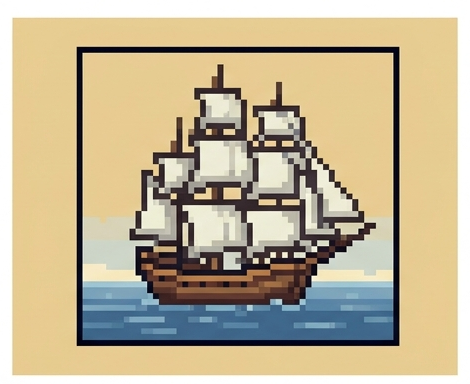
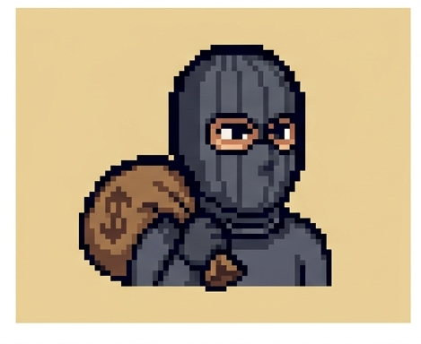
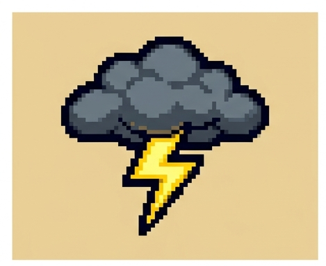
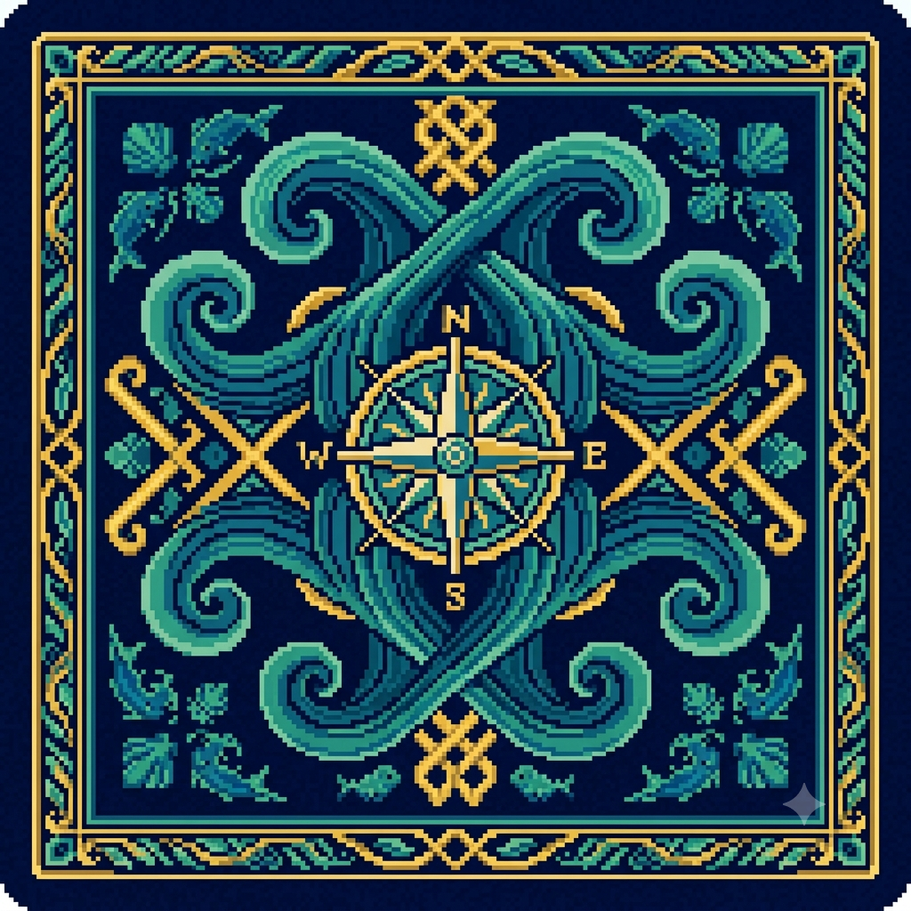
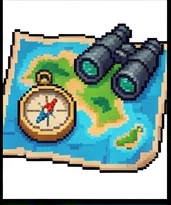
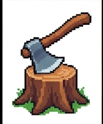
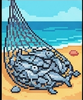
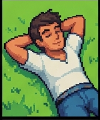

🏗️ OBIETTIVO
VITTORIA
Sei un naufrago su un'isola deserta. Se sopravvivi 21 giorni, il giorno 22 arriva la nave di soccorso.

SCONFITTA
Se i Punti Vita (PV) arrivano a 0, l'isola vince su di te. Parti con 20 PV.

🧡 LE RISORSE
Tutto gira intorno alle risorse: massimo 9 per tipo. A fine giornata consumi 1 Cibo e 1 Acqua: se mancano, perdi 1 PV.
Cibo
Da bacche, pesca, trappole e frutta. Senza cibo perdi PV ogni notte.
Acqua
Fontane, pozzi e pioggia. L'acqua fresca non manca mai: la cerchi tu!
Legna
Serve per la tempesta, il falò e la pentola di coccio.
Erbe
Curano malattie e sciami di insetti: tienile sempre a portata.
🌞 LA GIORNATA PASSO-PASSO
Evento del giorno
Ogni mattina peschi un evento a caso fra 12 (tempesta, pioggia, ladro, tartarughe...). Lo risolvi subito, spesso con una scelta.

Peschi la mano
5 carte (6 con lo Zaino grande). Le carte giocate e scartate tornano nel mazzo quando questo finisce.

3 azioni
Giocare una carta costa 1 azione. Eventi come Giorno di sole o la Mappa del naufragio ne aggiungono.

Gioca le carte
Le AZIONI hanno effetto subito e finiscono nello scarto. STRUMENTI e PERSONE restano attivi nell'accampamento per sempre.

Concludi giornata
Consumi -1 Cibo e -1 Acqua, poi si attivano i bonus di fine giornata (Rete da pesca, Amaca, Cuciniera...).

Ripeti
Se i PV arrivano a 0 perdi. Se arrivi al giorno 21, vinci! Ogni giorno diventa più difficile gestire le risorse.

🃏 LE 30 CARTE
Passa il mouse sulle carte per ingrandirle. Le AZIONI danno un effetto immediato; i STRUMENTI e le PERSONE restano attivi nell'accampamento.
⛅ I 12 EVENTI DEL GIORNO
Ogni giorno ne arriva uno a caso. Nessuno di questi va mai nello scarto: tornano tutti in gioco.
💡 CONSIGLI DEL NAUFRAGO
- Le Erbe e la Legna ti salvano da Malattia, Sciame di insetti e Tempesta: non spenderle a caso.
- Gli STRUMENTI pagano da soli: cerca subito Rete da pesca, Amaca e Falò.
- Giocare Riposo o Medicina quando i PV sono già al massimo è uno spreco: tieni le azioni per le risorse.
- La Bottiglia col messaggio e la Nave lontana sommano le carte in mano del giorno dopo: pianifica.
- Se il mazzo finisce, lo scarto viene rimescolato: giocare carte forti presto le fa tornare prima.
- Non avere fretta: 3 azioni ben usate battono 5 azioni sprecate.